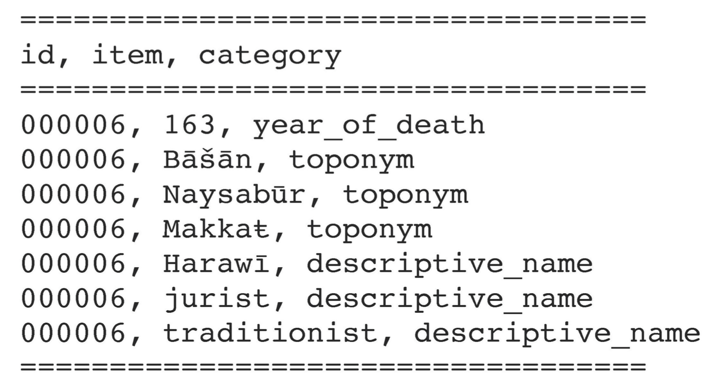
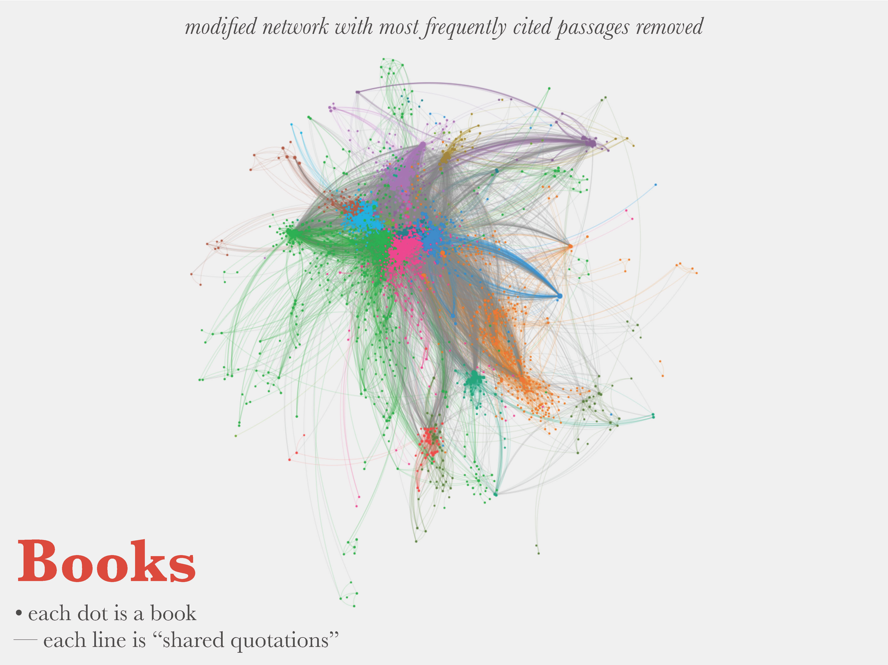
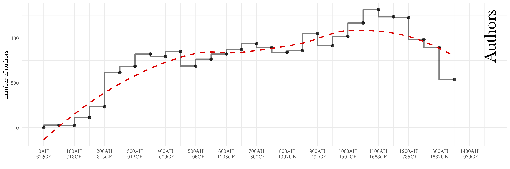

background-image: url(./images/bg_default_2022_eis.png) background-size: contain class: center, middle # *TO DB OR NOT TO DB* ### LOD-Like Approach and Algorithmic Analysis ⥈ **Maxim Romanov**<br> *Junior Research Group Leader<br> Emmy Noether Research Group<br> “The Evolution of Islamic Societies (c.600-1600 CE):<br> Algorithmic Analysis into Social History”* Universität Hamburg ⥈ April 11, 2022 <br> <br> <br> --- background-image: url(./images/bg_default_2022a_eis.png) background-size: contain class: center, middle ### *funded by DFG within the Emmy Noether Programme* <img src="./images/dfg_website.png" alt="Drawing" style="width: 800px;"/> --- background-image: url(./images/bg_default_2022a_eis.png) background-size: contain # Arabic Written Tradition .large[ - **historical and biographical texts** (*chronicles* and *biographical collections*)<br><br> - *low hundreds?* - _c._ 300 texts digitized - _c._ 100,000,000 words - _c._ 500,000 biographical records ] ??? - The tradition is particularly rich in chronicles and biographical collections; - These texts are often truly extensive. (Ibn Asakir ±9mln; Dhahabi - 3.3 mln; 2.9 mln; Mizzi - 2.6 mln) - They preserve massive amounts of information on historical processes that shaped and molded Islamic societies. - They are crucial for our understanding of this chapter in the history of the humanity. - Their numbers run into low hundreds - For the project that I am proposing I have collected some 300 texts - - a corpus of 100 million words - - 485 thousand biographical records --- background-image: url(./images/bg_default_2022a_eis.png) background-size: contain # *Chronicles and Biographical Collections* .large[ - **_Potentially:_**:<br> we have information to produce a robust model of the development of the Islamic world - **_So far, unfortunately:_**<br> “our blessing and our curse”<br>— as Wadād al-Qāḍī put it ] ??? - **Unfortunately**: the very volume of this information so far has been both “our blessing and our curse”, as a leading Arabist put it - so far, it has been a real methodological “bottleneck” for our field. --- background-image: url(./images/bg_default_2022a_eis.png) background-size: contain # The Promise of rDB prosopographical data *“without 500 monks at hand”...* - **in the 1980s, 1990s, 2000s:** - *Onomasticon Arabicum* (CNRS), <https://onomasticon.irht.cnrs.fr/> - *Prosopografía de los ulemas de al-Andalus* (EEA CSIC), <https://www.eea.csic.es/pua/> - *Jerusalem Prosopographical Project* (HUJ), <http://micro5.mscc.huji.ac.il:81/JPP/demo/> - *[The Netherlands] Ulama Project*, *no online presence* - *Mamluk Political Prosopography Project*, (U Gent), <https://www.mamluk.ugent.be/MP3> - all great and amazing projects, but... --- background-image: url(./images/bg_default_2022a_eis.png) background-size: contain # The Problems of rDB prosopographical data *“without 500 monks at hand”...* - *scope limitation*: each is limited in the pre-imposed scope; expanding this scope is difficult; - *data model limitation*: one has to decide practically *a priori* what to collect and how to classify; adjusting rDB data model is complicated; - *extractive nature*: in most cases, no *live* connection to the source; extracted data gets effectively decontextualized; - *funding/team demanding*: they rely on unscalable manual labor; - *depth-first issue*: collect all, then analyze (*the killer tail* of Zipf’s Law) - *not analytical*: rDB is a data storage and organization tool, not an analytical tool --- background-image: url(./images/bg_default_2022a_eis.png) background-size: contain ## Relational Database Approach - *relational database* - interconnected tables within the same database shell --- background-image: url(./images/bg_default_2022a_eis.png) background-size: contain ## LOD-Like Approach - *“disassembled relational database”: connections via URIs* - low level data (manual): federated flat text files (YML); - mid level data (automated): assembled and joined tabular data (TSV); - high level data (automated): experimenting with different data models (TSV); --- background-image: url(./images/bg_default_2022a_eis.png) background-size: contain ## LOD-Like: Federated Flat Files (YML) --- background-image: url(./images/bg_default_2022a_eis.png) background-size: contain ## Algorithmic Analysis Principles - data collection and its analysis should be driven by data mining (automated and semi-automated data extraction) and modeling of research questions through various proxies (abstractions); - data organization should rely on linkable elements and federated maintenance (e.g., an LOD-like data model, canonical/distributed text services, version control systems); - its technological complexity should be kept as “simple as possible, but not simpler” (for example, custom lightweight markdown, instead of heavy TEI XML); and - it can be considered sustainable, only if you can do it alone. --- background-image: url(./images/bg_default_2022a_eis.png) background-size: contain ### Romanov, Maxim. 2017. “Algorithmic Analysis of Medieval Arabic Biographical Collections.” *Speculum* 92 (S1): S226–46. https://doi.org/10.1086/693970. <img src="./images/articleOnline.png" alt="Drawing" style="width: 800px;"/> --- background-image: url(./images/bg_default_2022a_eis.png) background-size: contain class: middle # *Algorithhmic Analysis (A2)* ## Ismāʿīl Bāšā al-Baġdādī (d. 1339/1920) and his *Hadiyyaŧ al-ʿārifīn* (“The Gift to the Knowledgeable”) ### > 8,800 biographies with over 40,000 books titles • **Local LOD-like Data Model**<br> • *Prosopographical Data:* • descriptive names (Ar. *nisbaŧ*) • places (toponyms) • dates • [[books]]<br> • *Descriptive Name Scheme:* • descriptive name • classification(s)<br> • *Toponymic Scheme:* • place • type • region • coordinates --- background-image: url(./images/bg_default_2022a_eis.png) background-size: contain exclude: true ## *A2: Concept* --- background-image: url(./images/bg_default_2022a_eis.png) background-size: contain ## *A2: Concept — Iterative Process* <img src="./images/algorithmic_modeling.pdf" alt="Drawing" style="width: 800px;"/> - bringing together: data curation, distant reading, and close reading --- background-image: url(./images/bg_default_2022a_eis.png) background-size: contain ## *A2: Text-Mining > Abstraction* <img src="./images/01.jpg" alt="Drawing" style="width: 800px;"/> --- background-image: url(./images/bg_default_2022a_eis.png) background-size: contain ## *A2: Text-Mining > Tidy Data Model (with Triples)* <img src="./images/02.jpg" alt="Drawing" style="width: 800px;"/> --- background-image: url(./images/bg_default_2022a_eis.png) background-size: contain ## *A2: Text-Mining > Tidy Data Model (with Triples)* - **Subject > Verb > Object**: *id > category > item* * **000006** `has year_of_death` *163* * **000006** `has toponym` *Bāšān* * **000006** `has toponym` *Makkaŧ* * **000006** `has descriptive_name` *Harawī* (> links to onomastic > toponymic data) * **000006** `has descriptive_name` *jurist* (> links to onomastic data) * **000006** `has descriptive_name` *traditionist* (> links to onomastic data)  --- background-image: url(./images/bg_default_2022a_eis.png) background-size: contain ## *A2: Text-Mining > LOD-Like Model* <img src="./images/03.jpg" alt="Drawing" style="width: 800px;"/> --- background-image: url(./images/bg_default_2022a_eis.png) background-size: contain ## *A2: Text-Mining > LOD-Like Model*  --- background-image: url(./images/bg_default_2022a_eis.png) background-size: contain class: center, middle # *Some results* --- background-image: url(./images/bg_default_2022a_eis.png) background-size: contain ## *A2: Authors & Books (dates)*  <img src="./images/ha_books.png" alt="Drawing" style="width: 700px;"/> --- background-image: url(./images/bg_default_2022a_eis.png) background-size: contain ## *A2: Regions (<https://althurayya.github.io/>)* <img src="./images/althurayya.png" alt="Drawing" style="width: 800px;"/> --- background-image: url(./images/bg_default_2022a_eis.png) background-size: contain # *A2: Regions* <img src="./images/graph_bar.png" alt="Drawing" style="width: 800px;"/> --- background-image: url(./images/bg_default_2022a_eis.png) background-size: contain # *A2: Regions Over Time* <img src="./images/rot_iraq.png" alt="Drawing" style="width: 800px;"/> <img src="./images/rot_iran.png" alt="Drawing" style="width: 800px;"/> --- background-image: url(./images/bg_default_2022a_eis.png) background-size: contain # *A2: Regions Over Time* <img src="./images/rot_misr.png" alt="Drawing" style="width: 800px;"/> <img src="./images/rot_sham.png" alt="Drawing" style="width: 800px;"/> --- background-image: url(./images/bg_default_2022a_eis.png) background-size: contain # *A2: Regions Over Time* <img src="./images/rot_andalus.png" alt="Drawing" style="width: 800px;"/> <img src="./images/rot_rum.png" alt="Drawing" style="width: 800px;"/> --- background-image: url(./images/map03.png) background-size: contain # *A2: Networks* <br><br><br><br><br><br><br><br><br><br><br><br><br><br><br><br> - al-Ṯurayyā Project: <a href="https://althurayya.github.io">althurayya.github.io</a> --- background-image: url(./images/map04.png) background-size: contain # *A2: Networks* <br><br><br><br><br><br><br><br><br><br><br><br><br><br><br><br> - al-Ṯurayyā Project: <a href="https://althurayya.github.io">althurayya.github.io</a> --- background-image: url(./images/HA_Connections1100-1200_Period100.png) background-size: contain # *A2: Cultural Connections* .footnote[The Iraqi-Iranian core in the twelfth century CE] --- background-image: url(./images/HA_Connections1200-1300_Period100.png) background-size: contain # *A2: Cultural Connections* .footnote[Massive migrations of the thirteenth century CE] --- background-image: url(./images/HA_Connections1400-1500_Period100.png) background-size: contain # *A2: Cultural Connections* .footnote[New Mamlūk core of the fourteenth and fifteenth centuries CE] --- background-image: url(./images/HA_Connections1500-1600_Period100.png) background-size: contain # *A2: Cultural Connections* .footnote[Reconfiguration of the sixteenth century CE] --- background-image: url(./images/HA_Connections1700-1800_Period100.png) background-size: contain # *A2: Cultural Connections* .footnote[The Turco-Arabic and Indo-Iranian cores in the eighteenth century] --- background-image: url(./images/bg_default_2022a_eis.png) background-size: contain class: middle ## *To Reiterate*: Algorithmic Analysis Principles - data collection and its analysis should be driven by data mining (automated and semi-automated data extraction) and modeling of research questions through various proxies (abstractions); - data organization should rely on linkable elements and federated maintenance (e.g., an LOD-like data model, canonical/distributed text services, version control systems); - its technological complexity should be kept as “simple as possible, but not simpler” (for example, custom lightweight markdown, instead of heavy TEI XML); and - it can be considered sustainable, only if you can do it alone. --- background-image: url(./images/bg_default_2022_eis.png) background-size: contain class: center, middle # *Thank you* ⥈ **Maxim Romanov**<br> Universität Hamburg ⥈ April 11, 2022 <br> <br> <br>